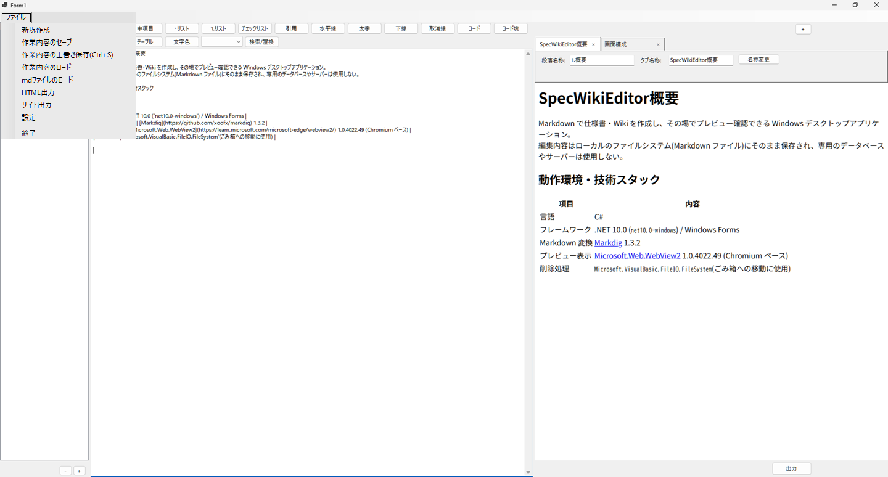

出力、その他

HTML 出力
右下の「出力」ボタン、およびファイルメニューの「HTML出力」は同じ処理を呼び出す。
- 現在エディタで開いている1ファイルのみを対象に HTML を生成する。
- 出力前にエディタの内容を保存する。
- 保存先を選ぶダイアログ(
SaveFileDialog)を表示し、ユーザーが指定した場所に元のファイル名 +.htmlで保存する。 - 画像を含めて単体の HTML でも正しく表示できるよう、
assetsフォルダの中身をまるごと保存先フォルダ内のassetsサブフォルダにコピーし、画像参照を相対パス(assets/xxxxx.png)に差し替える。 - 生成後、既定のブラウザで自動的に開く。
ファイルメニュー
画面上部のメニューバー「ファイル」から、以下の操作を行える。
| メニュー項目 | 動作 |
|---|---|
| 新規作成 | 未保存の変更があれば確認したうえで、プロジェクトルートの中身を「TOP」タブのみの空の状態にリセットする(下記「10. 起動時の挙動・多重起動の防止」のResetProjectToBlankと同じ処理) |
| 作業内容のセーブ | 常に保存先を選ぶダイアログを表示し、プロジェクトルート全体(全タブ・全段落・assets)を1つの .spc ファイル(実体はZIP形式)にまとめて保存する。保存完了メッセージを表示する |
| 作業内容の上書き保存(Ctrl+S) | 既に保存・読み込み済みの .spc ファイルがあれば、ダイアログを出さずそこへ無言で上書き保存する。まだ保存先が無い場合のみ、保存先を選ぶダイアログを表示する。保存完了メッセージは表示しない。キーボードショートカット Ctrl+S からも同じ処理を呼び出せる |
| 作業内容のロード | 未保存の変更がある場合、先に「現在の作業内容に未保存の内容があります。このまま別ファイルをロードすると作業内容が失われますがよろしいですか?」を確認する(はい＝未保存のまま続行、いいえ＝保存先を選んで保存してから続行、キャンセル＝中止)。そのうえで読み込み元の .spc ファイルを選ぶダイアログを表示し、プロジェクトルートの内容を選択した .spc の内容で完全に置き換える |
| mdファイルのロード | 読み込み元の .md ファイルを選ぶダイアログを表示し、現在選択中のタブに、元ファイル名をそのまま段落名として新規段落を追加する(採番ルールは通常の段落追加と同じ) |
| HTML出力 | 右下の「出力」ボタンと同じ処理(上記「6. HTML 出力」参照) |
| サイト出力 | 全タブ・全段落をつないだ静的HTMLサイトを書き出す(上記「7. サイト出力」参照) |
| 設定 | Default.cfg の内容を編集するダイアログを開く(下記「11. 設定・Default.cfg」参照) |
| 終了 | ウィンドウを閉じる。未保存の変更がある場合は「作業内容が失われますがよろしいですか?」の確認ダイアログを表示する |
- 「新規作成」「作業内容のロード」はどちらも、未保存の変更がある場合の確認ロジック(
ConfirmDiscardUnsavedChanges)を共通で使っている。確認メッセージの一部(「新規作成」/「別ファイルをロード」)だけが操作内容に応じて変わる。 - 「未保存フラグ」は、テキスト編集・タブ/段落の追加・削除・リネームなどがあった場合に立つ。「作業内容のセーブ」または「作業内容の上書き保存」に成功するとリセットされる。ウィンドウを閉じる際(メニューの「終了」・タイトルバーの×ボタンいずれも)や、「新規作成」「作業内容のロード」を実行する際に、このフラグを見て確認ダイアログを出すかどうかを判定する。
タイトルバーの表示
- 保存・読み込みしたファイルがまだ無い場合は既定の
Form1を表示する。 - 一度でも「作業内容のセーブ」「作業内容の上書き保存」「作業内容のロード」を行うと、以降はそのファイル名(拡張子なし)がタイトルバーに表示される。
- 未保存の変更がある間は、タイトル末尾に
*が付く(例:WikiProject *)。
起動時の挙動・多重起動の防止
- アプリ起動時は、Excel/PowerPoint 等の事務系アプリと同様に常に新規(「TOP」タブのみの空の状態)から開始する(詳細は「データの保存先」を参照)。この処理は
Form1.ResetProjectToBlank()が担い、「新規作成」メニューとも共通で使われる。 - ただし
Default.cfgを初めて作成した回(初回起動・旧バージョンからの移行が発生した回)だけは例外で、移行されたデータ(または新規生成された既定タブ)をそのまま表示する。この判定分岐はForm1_Load内で行っている。 - 多重起動はできない。
Program.csのMain()で名前付きMutex(SpecWikiEditor_SingleInstance_Mutex)を取得し、既に他のプロセスが起動していれば案内メッセージを表示してすぐに終了する。プロジェクトの保存先フォルダが1箇所に固定されているため、複数インスタンスを許可すると、片方の起動処理(空へのリセットなど)がもう片方の作業内容を消してしまう事故につながるため。
設定・Default.cfg
アプリの既定設定(プロジェクトの保存先パス・フォルダ名・起動時にウィンドウを最大化するか)は、実行ファイルと同じフォルダの
Default.cfgというテキストファイルに保存される。Key=Value形式で、#から始まる行はコメントとして無視される。起動時に
Default.cfgが存在しない場合は、以下の既定値で自動的に新規作成する。項目 既定値 SavePath(保存先の親パス)実行ファイルと同じフォルダ FolderName(プロジェクトフォルダ名)SpecWikiMaximizeOnStartup(起動時に最大化するか)Trueファイルメニューの「設定」から、これらの値をダイアログ上で編集できる(保存先は「参照...」ボタンでフォルダ選択も可能)。変更内容は
Default.cfgに保存され、次回アプリ起動時から反映される(実行中のプロジェクトを即座に移動する機能ではない)。Default.cfgの内容が壊れている・項目が欠けている場合は、該当項目のみ既定値にフォールバックする。
削除操作の安全性
- タブ・段落のいずれの削除も、完全削除ではなく Windows のごみ箱へ移動する方式を採用している。誤って削除した場合も、ごみ箱から復元できる。